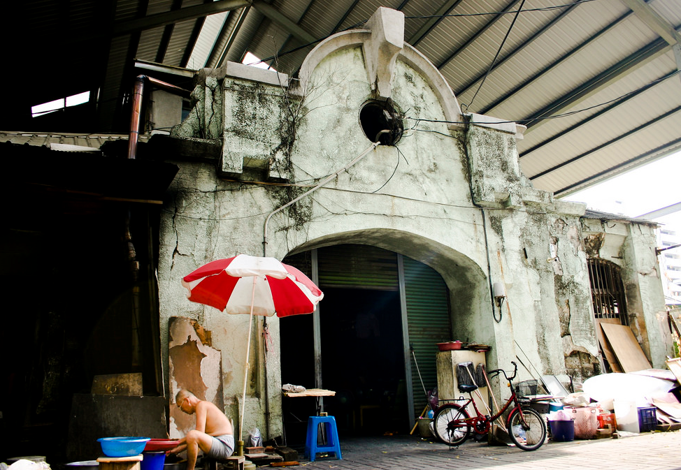

Story

我是工設系大二的郭曉螢，個性較外向，喜歡與人互動，進而啟發靈感。並且對週遭事物敏感，善於觀察。以往在團隊中屬於默默耕耘的角色，因此當組長這種需要整合領導力對我來說是種挑戰，希望我能藉由這次機會有所成長。也期望在剩下的半學期大家都能為這團隊盡心盡力、發揮所長，在最後有個令自己驕傲的成果。
林詩軒，目前就讀電機二年級。主要興趣是打球、看影集、桌遊等，喜歡一些新奇的事物，也喜歡一些挑戰，覺得有個充滿新奇、期待與挑戰的生活讓人感覺很充實也很有趣。希望在這門課不只學到有關網頁的東西，也希望能在與其他系合作中學習團隊精神與合作，更希望能有個很好的成果，讓人”amazing”，讓二個月的自己對於最後的成果感到驚訝與佩服。
嗨大家好，我是工設107的黃彥霖，喜歡畫畫、聽爵士樂、看好的影片、吃美食。比較擅長的東西是產品造型設計、汽車設計、跟sketch。希望在未來大家能充分利用自己所擅長的事達到最高的工作效率。請大家多多指教
我是林佳歡，馬來西亞人，今年工設二年級。高中唸美工班，畢業後在母校擔任美術科專任教師，同時兼任聯課處助理。專負責初高中班的普通美術課，也處理一些聯課處的資料整理歸檔等等。平時愛看電視劇，打網球。喜歡烹飪和烘焙。希望這一次由三系合作的app可以如願的完成，達成我們的目標。
我是歷史系大四的呂昀翰，在我眼中歷史並非只是書本中死板的知識，反而能賦予事物內涵並厚實其深度，而在這次的課程中有幸能與不同專業領域的人才進行合作，實踐歷史文化的轉化與再運用。團隊中人才濟濟，來自不同科系並富有抱負，期許自己能夠突破以往思考的侷限，團隊的成果也能實際運用到西市場，發揚在地文化與精神。
我叫李其曄是最喜歡抬時鐘的台中人電機系大四即將畢業。之前在辦營隊的時候很喜歡穿棉褲，男生穿棉褲偶爾會有意想不到的變化，我因為太常有變化被取了外號叫做台南好易勃，言下之意盡在不言中。很喜歡原住民文化希望有朝一日可以在部落隱居。是個在網頁寫作上非常非常新的新手，希望能夠透過這堂課學習到更多網頁上的技術。
哈囉～我是來自有著「東方蒙地卡羅」之稱—澳門的僑生，歷史系108的陳沛皓，平常會喜歡看書、踢球，或者是在假期的時候到處去亂跑亂逛。在我們僑居地澳門當中，出國就讀的人數相當可觀。我之所以會選擇在台灣升學，除了是因為要擴大視野外，台灣人的善良也是吸引我來台就學的其中一個因素，所以我希望這四年內除了可以認識很多臺灣，還有外國的朋友外，也希望能夠在台灣的四年內能夠走遍台灣各個地方，不單能夠留下美好的回憶外，也能夠將台灣的美傳至澳門、甚至是其他地方，不枉此行。

我是資訊系大四的林建宏。平日喜歡聽音樂、看漫畫、還有吃好吃的台南美食。當初是希望能在畢業前多學一些網頁的技術，所以來修這門課。而這門課的確有很多機會可以學習網頁的技術，但是跟以往聽講的課程不一樣，是需要自己主動學習。更不一樣的事可以不同科系的同學合作，對我還講更是一個難得的機會。希望學期末可以和大家一起有更好的成果。